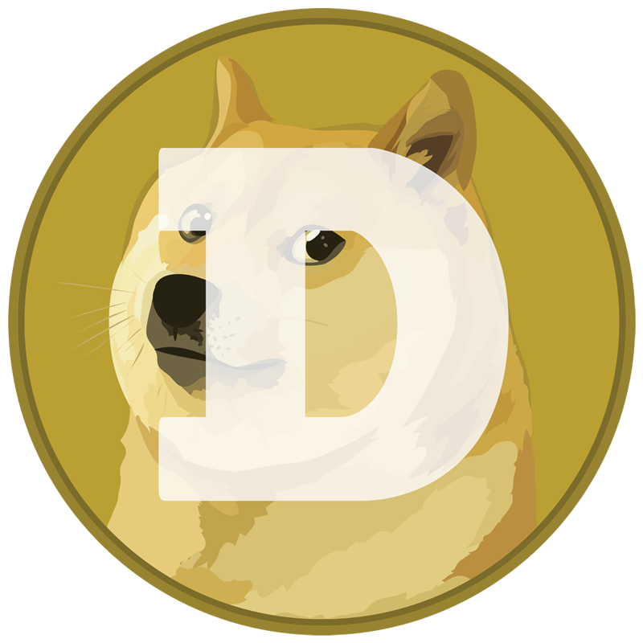

DOGECOIN LA NUEVA CRYPTOMONEDA MAS POPULAR GRACIAS A ELON MUSK
¿Qué es el Dogecoin?

¿tienen sentido las alternativas a Bitcoin?
El Dogecoin está basado en el Litecoin, y su funcionamiento es similar al de otras criptomonedas. Necesitas un programa en el ordenador con el que resolver los complejos algoritmos con los que se mina esta criptomoneda. Como el Litecoin, el Dogecoin también utiliza un programa criptográfico llamado Scrypt, y le permite ser minado de forma más rápida que otros como el Bitcoin, aunque sin poder utilizar el mismo hardware que para este segundo.
El Dogecoin es un tipo de criptomoneda que nació como un divertimento basado en un meme. El meme es el de Doge, que se hizo popular en 2013, y consiste en la foto de un perro de raza Shiba Inu, a la que se le añaden frases gramaticalmente incorrectas. Con el tiempo, el meme ha ido evolucionando, pero sigue siendo un perro Shiba Inu con frases graciosas. Arriba tienes una captura del perro del meme, y si llevas tiempo en el mundillo de los memes seguro que lo has visto.
La criptomoneda Dogecoin fue creada en diciembre del 2013 por Billy Markus, programador y antiguo ingeniero de IBM. En aquella época, el Bitcoin estaba ganando muy mala fama por estar involucrada en las transacciones de mercados negros de la Dark Web, y Markus quiso crear una alternativa que no tuviera nada que ver con esos asuntos tan turbios. El nombre de la criptomoneda vino del meme, y la imagen del perro se utiliza en las imágenes con las que se ilustra.
Dogecoin, Litecoin... ¿tienen sentido las alternativas a Bitcoin?
EN XATAKA
Dogecoin, Litecoin.
Esta velocidad también está en las transacciones, lo que quiere decir que los pagos a través de esta criptomoneda pueden ser más rápidos que los que hagas con Bitcoins. Además, según su algoritmo, el máximo teórico de Dogecoins que se puede minar es de 100.000 millones de unidades, frente a los 21 millones de Bitcoin que podrá haber como máximo.
TAMBIÉN TE PUEDE INTERESAR
TRAILER NUEVA PELICULA CRIPTOMONEY